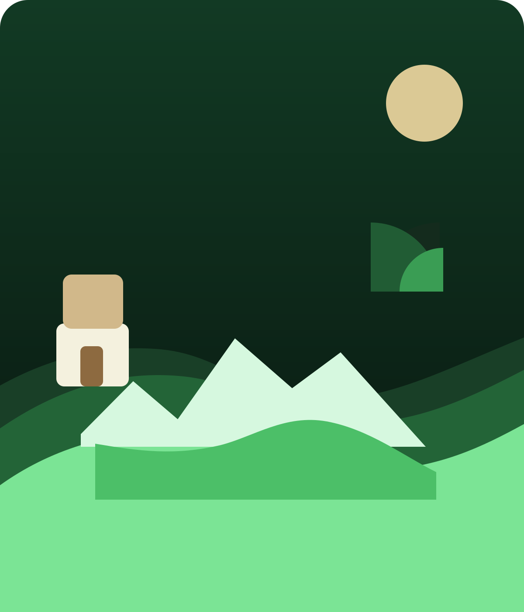
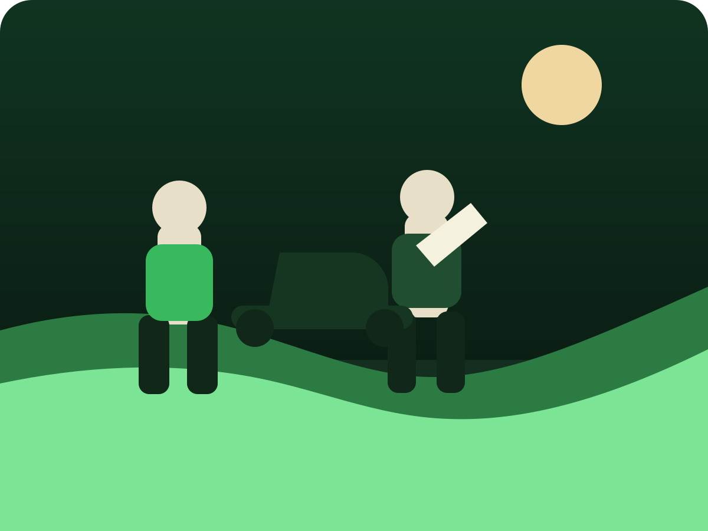

Péče o zeleň, která je vidět
Udržuj zeleň
Prémiová údržba trávníkům, rekultivace zahrad kácení stromu včetně frezovaní pařezu.
Reprezentativní vzhled pozemku bez starostí a bez kompromisů.
Pomáháme domům, firmám i areálům vypadat upraveně, hodnotně a profesionálně. Největší důraz klademe na košení trávníků, pravidelnou údržbu a výsledek, který zanechá silný první dojem.
Košení jako hlavní specializace
Košení a údržba pozemku
Rizikové kácení a frézovaní pařezů

Naše služby
Od pravidelného sečení až po náročné zásahy.
Web je postavený tak, aby zákazník hned pochopil, že zvládnete běžnou údržbu i práce, do kterých se jen tak někdo nepustí.
Košení trávníků a pravidelná údržba
Pravidelné i jednorázové sekání travnatých ploch, dosekání detailů, úklid po práci a nastavení plánu péče tak, aby trávník působil hustě, čistě a reprezentativně.
Údržba zeleně
Střih keřů, tvarování porostů, úprava záhonů, sezónní servis a dlouhodobá péče o areály.
Zakládání zahrad
Návrh a realizace zelených ploch, nové trávníky, výsadby a zahrady s jasnou kompozicí.
Rizikové kácení
Bezpečné řešení problematických stromů v blízkosti staveb, cest nebo elektrického vedení.
Firemní a bytové areály
Pravidelný servis, který udrží okolí firmy nebo objektu v perfektním stavu po celý rok.
Jednorázové zásahy
Rychlá pomoc před sezonou, po zanedbání péče nebo před důležitou návštěvou či akcí.
Ceník služeb
Přehled orientačních cen.
Košení trávníků
od 2,50 Kč / m²Údržba zeleně
od 650 Kč / hodZakládání zahrad
od 890 Kč / hodRizikové kácení
od 3 500 Kč / zásahProč si vyberou právě vás
Nejde jen o posekanou trávu. Jde o pocit, že je vše pod kontrolou.

Upravený exteriér vytváří důvěru u sousedů, návštěv i klientů ještě dřív, než zazvoní.
Výsledek nepůsobí jako zásah, ale jako profesionálně opečovaný prostor připravený k používání.
Pravidelný servis drží zahradu i areál ve formě bez stresu a bez přerostlých překvapení.
Zákazník přesně ví, co se bude dělat, kdy se to udělá a jak bude prostor po zásahu vypadat.

Ukázky realizací
Galerie, která má chuť přesvědčit.
Teď jsou zde ilustrační SVG vizuály. Vaše vlastní fotografie stačí později jen vyměnit v adresáři `assets`.


Reference
Skutečné recenze od klientů.
Kontakt
Chcete, aby váš pozemek vypadal přesně tak, jak má?
+420 734 369 304
udrzujzelen@seznam.cz
Působnost: okolí města, obce i firemní areály
Napsat poptávku